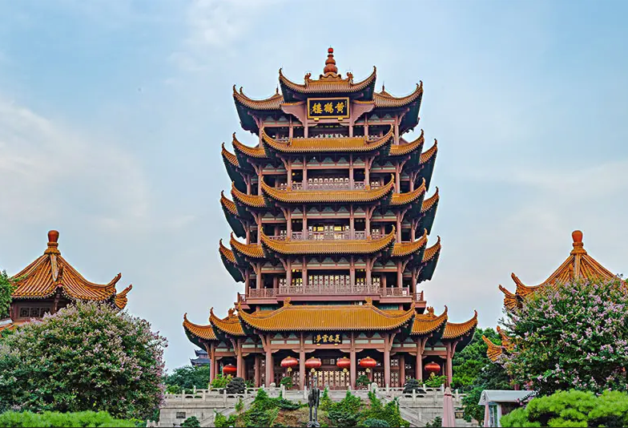

黄鹤楼，位于湖北省武汉市武昌区，地处蛇山之巅，濒临万里长江，为武汉市地标建筑；始建于三国吴黄武二年（223年），历代屡加重修，现存建筑以清代“同治楼”为原型设计，重建于1985年；因唐代诗人崔颢登楼所题《黄鹤楼》一诗而名扬四海。自古有“天下绝景”之美誉，与晴川阁、古琴台并称为“武汉三大名胜”，与湖南岳阳岳阳楼、江西南昌滕王阁并称为“江南三大名楼”，是“武汉十大景”之首、“中国古代四大名楼”之一、“中国十大历史文化名楼”之一，世称"天下江山第一楼"。
黄鹤楼主楼为四边套八边形体、钢筋混凝土框架仿木结构，通高51.4米，底层边宽30米，顶层边宽18米，飞檐五层，攒尖楼顶，顶覆金色琉璃瓦，由72根圆柱支撑，楼上有60个翘角向外伸展；楼外有铸铜黄鹤造型、胜像宝塔、牌坊、轩廊、亭阁等建筑环绕，整楼形如黄鹤，展翅欲飞，檐下四面悬挂匾额，正面悬书法家舒同题“黄鹤楼”三字金匾。
------------------------------------------------返回上页----------------------------------------------------- |